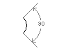

|
AddDimAngular Method |
Creates an angular dimension for an arc, two lines, or a circle.
Signature
RetVal = object.AddDimAngular(AngleVertex, FirstEndPoint, SecondEndPoint, TextPoint)
Object
ModelSpace Collection, PaperSpace Collection, Block
The objects this method applies to.
AngleVertex
Variant (three-element array of doubles); input-only
The 3D WCS coordinates specifying the center of the circle or arc, or the common vertex between the two dimensioned lines.
FirstEndPoint
Variant (three-element array of doubles); input-only
The 3D WCS coordinates specifying the point through which the first extension line passes.
SecondEndPoint
Variant (three-element array of doubles); input-only
The 3D WCS coordinates specifying the point through which the second extension line passes.
TextPoint
Variant (three-element array of doubles); input-only
The 3D WCS coordinates specifying the point at which the dimension text is to be displayed.
RetVal
DimAngular object
The newly created angular dimension.
Remarks
 |
The AngleVertex is the center of the circle or arc, or the common vertex between the two lines being dimensioned. FirstEndPoint and SecondEndPoint are the points through which the two extension lines pass.
The AngleVertex can be the same as one of the angle endpoints. If you need extension lines, they will be added automatically. The endpoints provided are used as origin points for the extension lines.
| Comments? |